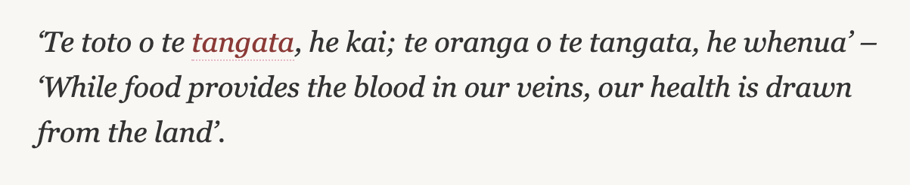

Kia ora!
Ko Hikurangi te maunga
Ko Waiapu te awa
Ko Horouta te waka
Ko Rāhui te marae
Ko Porourangi te tangata
Ko Ngāti Porou te iwi
Ko Lewis Taiapa tōku ingoa
Welcome to my Indentities Page, here I will give you an insight about me, my values, eithics, strengths and limitations, and what has shaped these. As you can see above, that is my 'Pepeha', it is a way of introducing yourself in Māori. It tells people who you are by sharing your connections with the people and places that are important to you. If you havent noticed already, I am of Maori (and Cook Island) descent and growing up in a full Maori environment has had a huge influence in forming my beliefs and values today.
So what are my values?
Communication, Listening, Appreciation, Integrity, Respect, Trust, and Honesty.
When it comes to core values, those listed above would stand out as being the most important to me. The list is always growing and changing as we journey through life, but I can say that as long as I hold these values, everything will be ok. Communication for me is ability to interact with people in a way that is respectful and two-way, holding that space to Listen and speak clearly with one another is good communication. Appreciation for me is seeing the beauty in everything, people, places, or things regardless of status, race, religion or culture. There’s always beauty in most things. Integrity, what you say and what you do, your word is your bond, if you say you are going to do something then do it. Having integrity builds trust and respect with others and means that you can rely on people or they can rely on you. Respect, Trust and Honesty go hand in hand. If you are a respectful, trusting, and honest person you will only draw positive things towards your life.
Explain a situation where you have had an ethical decision to make. Discuss how you weighed up the values involved in that decision, the decision you made and the consequences of the action you took.
One situation I found myself in a few years back was when I had to go to the bank to make a withdrawal. I needed some cash to get me through the day as I forgot my wallet at home and had no money for food and petrol etc. So I walked in and talked to the teller, we engaged in small chat while I asked for a withdrawal of $400. It just happened to be the day I needed to pay for my car registration so $400 was enough to get by. Anyway as we finished up our conversation she gives me the withdrawl slip to sign, hands me my money and I then bid her farewell. Later on that day I get home and find my wallet in one of my family members jackets, I quickly went on online to see if anything had been taken out and to my shock I see something unexpected. My balance had increased $400!!! I had to back track and make sense of all of this because it didn’t seem to make sense. It turns out, the teller had got so distracted when we were talking that she had processed the transaction as a deposit on the system, but gave me $400 cash as well. So basically I gained $800 total! I was left to think what do I do now? Do I leave it there or do I go back and let them know what has happened? In the end I decided to back and correct the mistake, but I did have friends give me other suggestions, which kind of makes you think in a different situation would you still make the same decision? For me making it right sits with my core values of Integrity and Honesty, if tested for example in the case here it was an easy decision to make. But I wonder if the situation had a spin on it like “you were desperate for money and you are about to get evicted with your child if you do not pay $400 by tomorrow” would that change your decision or at least consider keeping the money? Some may see that as a spiritual or universal sign that just as you needed the money, it some how appears. I think for me, I would still return it. But interesting none the less.
Describe how your culture has influenced your values and identity.
For me being Maori (and Cook Island), my culture has taught me a lot about Family or Whanaungatanga. I grew up in a full emersion Maori environment from Pre-school to College where we only spoke Te Reo. That experience taught me a lot about our way of life and what we value as individuals and as a group or Iwi/hapu. The culture really emphasises the importance of people, starting from yourself getting to know who you are, and where you come from, to then looking at the strong connections we have with our family and friends today, and those who have passed in the generations before us, our Tupuna. Loyalty, Respect, and Manakitanga (to care for others) are strong values in these interactions. We have strong connection to the land, it is what provides us with all that we need for life and is the source of our energy that flows through us. So respecting the land and our environment is a number one rule that we learn from day one. There is a Maori proverb:
Using the evidence gathered, describe your strengths and limitations.
Evaluate your strengths and limitations in terms of your learning and career development
Strengths:
One of my strengths is motivation and persistency, I once set a goal to do something my family had never done before and that was to represent out country in sport. My main reasons for wanting to this was to prove to myself that I could actually do it, and to then hopefully inspire the younger ones in my family that if they set big goals they too can achieve it as well. At the time I just started playing the sport of Inline Hockey, not a big sport here in NZ but fun, set a goal to make a NZ team in 3 years time, and then motivated with a desire in side to succeed I made the dream a reality. Years after one by one 4 of my siblings followed suit and also made NZ representative teams as well and got to travel the world. That may not be much for others, but was a moment to be proud of for a family growing up in humbled environment. I like to do things in order and not skip important parts. I understand the importance of getting the basics right before moving on to more complicated things. I learn best from repetition and practice. I am very committed! Once I decide to do something I will give it my all. Not afraid to try to learn new things! I like to plan out my day so that I am organized and have direction.
Limitations:
My biggest limitation at the moment is keeping focused and staying on track with tasks and exercises. I have noticed with the advent of new social applications and having a big circle of family/friends it can be easy to loose your attention and focus on tasks because of these distractions. So far on this journey I have been doing a lot of reflection in those areas and have made a plan to help me better manage my time and focus. I do also find that I am generally taking longer than expected to complete tasks. This I am still learning more about as it could be for many reasons ie: distractions, getting confused or trying to get my head used to new material or concepts, low energy, or possibly I may well be a slow learner. I will keep reflecting on this until I understand what the issues are and then plan how to develop those areas to become strengths. Ultimately I want to improve my over all learning skills and abilities.
Identify which of your strengths might help you in your learning journey and how they might intersect with learning obstacles.
I think what I have noticed with IT and the material we have covered so far is that a lot of the learning is done online reading blogs, watching tutorials, searching definitions of properties and how they all work together with other elements etc. In a learning environment like this, it is important to be willing to explore and not be afraid to learn new things. I think the biggest obstacle I have experienced so far is coming across something I haven’t seen before and experiencing the sudden shock of not knowing something, asking my self do I need to know this? Or should I know this already? Not the best thoughts to have, but I think having the courage to try and learn these new things and embrace the unknown will help me to overcome the fears of not knowing what something is and how it works. It’s all a journey.
Share an example from your experience of where you were trying to work productively with others, but there was resistance or tension. Discuss the strategies you used at that time, how effective they were, and your reflections on what other strategies you would try now, and why.
One example I had was working with a guy at a glass manufacturing plant in Grenada North. It had set a target to try and process 800 sheets of glass that day, which was 300 sheets over the usual daily quota, just a personal goal of mine but also backed by a weekly voucher provided by our production manager. Anyway, there was a co-worker who kept interrupting our flow of work, by talking, occupying our work space and freely giving himself permission to use our machine making us have to wait and chew up valuable time. I found it difficult to process and was unsure how best to approach the situation. He had been working there for over 20 years and I had only just finished my first month, what made it more awkward was that he was the one who trained me but we both report to the same manager so we are technically on the same level of employment. On top of that, the training he provided used an outdated process referring to jobs via a printed job list sheet which only shows the information that was printed from the start of the shift, I had taught myself how to use the computer system to check any updates for urgent orders so that I was up to date with the jobs. He didn’t like that I was using the system and also didn’t know I had an IT background so he thought I shouldn’t be playing around with the system. So there is a combination of things going on here, assumed hierarchy/authority, resistance to change, unwillingness to let me be and work productively, interfering with my current workspace and constant talking and distracting. I decided to speak respectfully to him and ask for some space for me to complete my work, I think he felt unsure how to respond, but respected my honesty and let me be for at least an hour until he decided to come back. I asked again that time it didn’t work, he got triggered and so my final strategy was to speak to the manager and explain the situation. He kindly had a word to the co-worker and with reluctancy the co-worker gave me the space to complete my task an I managed to get the target of 800 sheets done that day. On reflection to this day, I still don’t know what the best way would have been to deal with the situation, there were too many factors effecting his behaviour and I have no idea why he was like that. It is hard to know what to do if you don’t understand the person involved on the other end. In the end we have a job to do and talking to the manager was the best way for me to deal this issue.